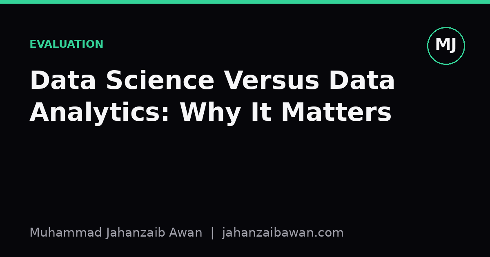

Data Science Versus Data Analytics: Why It Matters
The two titles get used interchangeably in job adverts, but the actual day-to-day work, the skills tested, and the kind of judgement required are genuinely different.

Why the blurred title causes real problems
I have seen job adverts titled 'Data Scientist' that ask for SQL, a dashboarding tool, and the ability to explain last quarter's churn rate to a sales director. I have also seen 'Data Analyst' postings that quietly expect someone to tune a gradient boosted model and deploy it behind an API. The titles get swapped so often that candidates and hiring managers alike have stopped trusting them, which is a shame, because the underlying distinction is not cosmetic. It changes what question you are allowed to ask, what kind of answer counts as correct, and how much risk you are taking on when you ship a conclusion.
At the core, data analytics is about describing and explaining what has already happened, using data that mostly already exists in a clean enough form. Data science is about building a system that makes predictions or decisions on data it has not seen yet. That single difference, backward-looking description versus forward-looking generalisation, cascades into almost everything else: the tools you reach for, the way you validate your work, and the kind of mistake that will actually hurt you.
I care about this distinction because I have watched it collapse in practice. A team builds a predictive model, validates it the way you would validate a quarterly report (does the number look sensible, does it match last year's trend), and ships it. Nobody checked whether the model would generalise to next month's customers, because nobody on the team was trained to ask that question. The dashboard mindset and the prediction mindset require different instincts, and pretending they are the same role produces confident, wrong answers.
A worked example: churn this quarter versus churn next quarter
Imagine a telecoms company wants to understand customer churn. The analytics task looks like this: pull twelve months of billing and support ticket data, segment customers by contract type and region, and report that customers on month-to-month contracts churned at 34 percent while customers on two-year contracts churned at 6 percent. This is entirely retrospective. The analyst is summarising a fixed, already-observed dataset. The main risks are measurement error, misleading aggregation (Simpson's paradox lurking in a poorly chosen group-by), and presenting correlation as if it were causation when a stakeholder asks 'so should we cancel month-to-month contracts?'.
Now take the data science version of the same problem: build a model that predicts, for each currently active customer, the probability they will churn in the next ninety days, so the retention team can intervene early. This is fundamentally a different exercise. The moment you say 'predict for customers I have not seen yet', you have introduced the entire machinery of generalisation. You need a train and test split that respects time, because if you randomly shuffle historical records you will let the model peek at future information and your accuracy will look fantastic until it meets reality. You need to worry about feature leakage: a column like 'date of cancellation request' will predict churn perfectly in training and be completely useless in production, because it does not exist until after the event you are trying to predict.
Say the model reports 82 percent accuracy on a held-out test set. An analytics mindset might stop there and call it a win. A data science mindset asks harder questions: what is the base rate of churn in this dataset, because if only 10 percent of customers churn, a model that always predicts 'no churn' already scores 90 percent accuracy and your 82 percent model is actively worse than doing nothing. It asks whether the test set was drawn from a later time window than training, to simulate the real deployment condition where you are always predicting forward. It asks what the cost of a false negative (a churning customer missed) is relative to a false positive (wasted retention budget on a loyal customer), because accuracy alone hides that trade-off entirely.
Different failure modes, different safeguards
The practical upshot is that the two roles fail in different ways, and they need different safeguards. An analyst's worst mistake is usually a wrong or misleading summary: an average that hides a bimodal distribution, a trend line drawn through seasonal noise, a chart that implies causation the data cannot support. The fix is largely about statistical literacy, careful visualisation, and discipline about what claims the data actually licenses. The cost of getting it wrong is usually a bad decision made once, based on a bad report.
A data scientist's worst mistake is usually a model that looks good on paper and fails silently in production, because the validation setup did not match the deployment reality. This is where leakage-aware splits, proper baselines, and honest uncertainty estimates earn their keep. A model trained on data from before a major pricing change and deployed after it is not solving the same problem it was tested on, and no amount of cross-validation inside the stale dataset will reveal that. The cost of getting it wrong is a system that keeps making a wrong decision, automatically, at scale, until someone notices.
This is also why I am sceptical of hiring processes that test both roles with the same checklist. Testing SQL joins and chart-reading tells you almost nothing about whether someone will catch a leaked feature or question an unrealistic accuracy figure. Testing someone's ability to tune a neural network tells you little about whether they can write a report that a non-technical director will act on correctly. Both skill sets are valuable, and plenty of people genuinely do both well, but treating them as interchangeable on a job spec sets up a mismatch between what was promised and what gets delivered.
The practical takeaway
If you are hiring, write the job description around the actual deliverable. If the deliverable is a report, a dashboard, or a recommendation based on existing data, call it analytics and hire for statistical reasoning and communication. If the deliverable is a system that will make predictions on future, unseen data, call it data science and hire for someone who treats generalisation as the central problem, not an afterthought.
If you are the one doing the work, the one question worth asking before you start is simple: will this conclusion be applied to the exact data I am looking at, or to data that does not exist yet. The answer tells you immediately which discipline you are actually practising, no matter what your business card says, and it tells you exactly where to be paranoid.